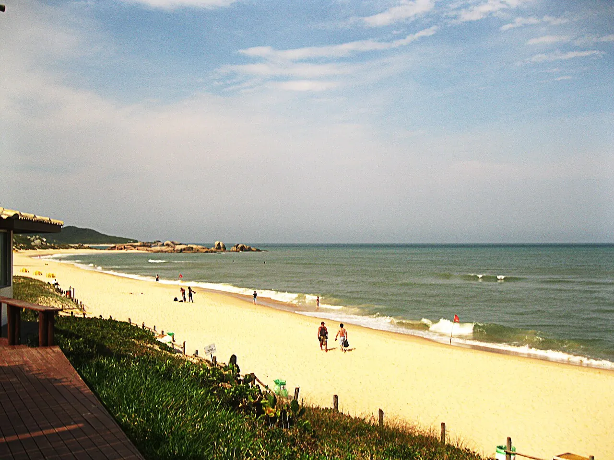

Praia Mole
Florianópolis, Brésil · surf, bodyboard

Plage entourée de collines et de rochers, aux vagues puissantes. Un des spots phares de l’île de Santa Catarina.
- Lieu
- Florianópolis, Brésil
- Niveau
- Intermédiaire
- Activités
- surf, bodyboard
- Type d'eau
- Mer / océan
- Coordonnées
- -27.60, -48.43 (position approximative du secteur)
Dangers à connaître
- Shore break.
- Courants latéraux.
Le conseil d'Ocean Buddy
Les vagues cassent près du bord : attention au shore break.
Ouvrir dans Ocean Buddy Télécharger sur l'App Store
Source : Fiche Ocean Buddy · septembre 2026 · à vérifier localement.